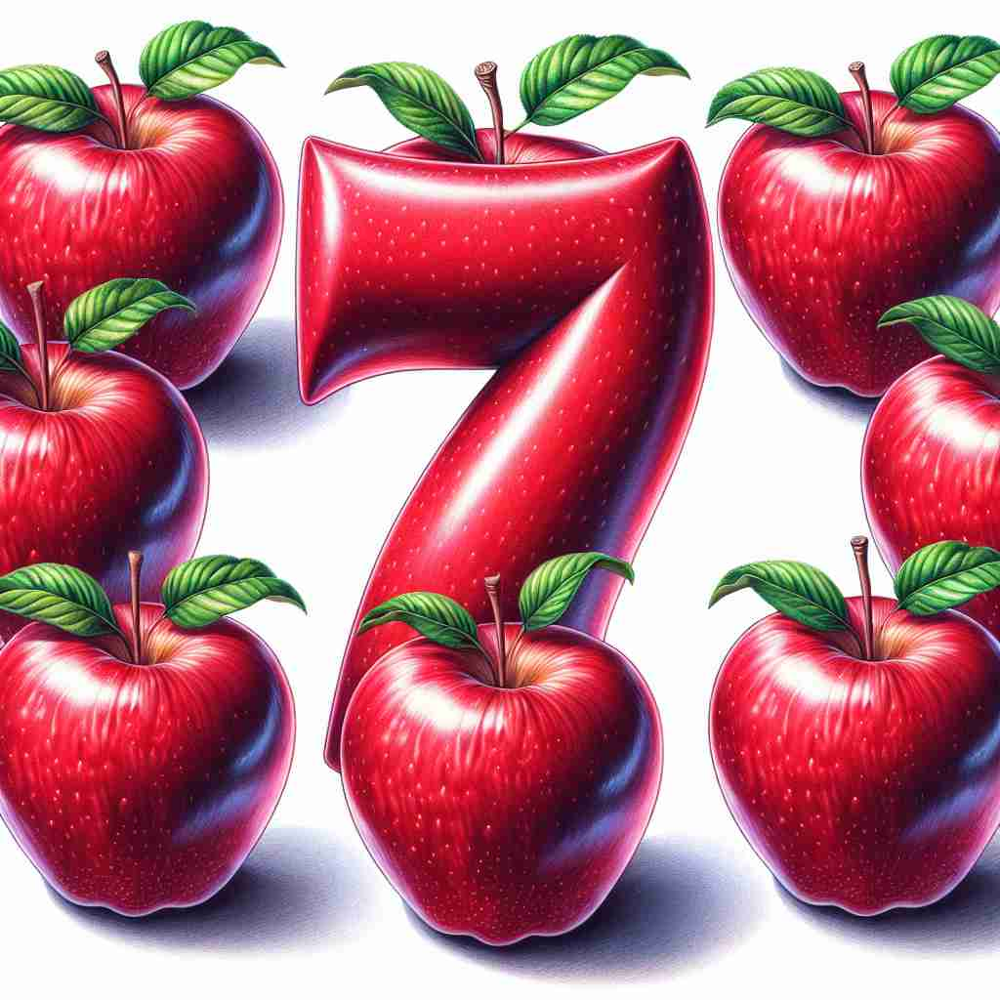

💬 We have seven days a week to enjoy our activities. 我们有一周七天的时间来享受我们的活动。

💬 The seven dwarfs stand in front of the house with the number seven. 七个小矮人站在编号为七的房子前。

💬 The child is wearing a shirt with the number seven. 这个孩子穿着一件有数字七的衬衫。

💬 In the picture, there are seven apples around the number seven. 图片中有七个苹果围绕着数字七。
🧠 记忆'seven'的关键在于始终围绕数字7。无论是表示数量、顺序，还是在特定文化中的象征意义，都源于这个基本数字。想象一周七天，或者数到7，这些日常场景可以帮助你牢记'seven'的核心含义和衍生用法。
🔈 ['sev(ə)n]
🗝️ n. & adj. the number 7 数字 7
🎭 在一个数学课堂上，老师在黑板上画了一串数字：1, 2, 3, 4, 5, 6, 7，并用红笔圈出'7'。她微笑着对学生们说："这是数字七，'seven'，在计数中紧接在六之后。"
💬 There are seven days in a week. 一周有七天。
🌳 来源于古英语 "seofon"，该词没有常见的词根或词缀结构，是一个基础数字词汇，表示‘七’。
🕸️ 1. seventeen: 十七 2. seventy: 七十 3. seventh: 第七
💡 可以通过联想与其他数字相关的词汇，如 "six"（六）和 "eight"（八），将 "seven" 在系列中定位。记住‘七’在英语中通常没有复杂的拼写变化，保持简单。